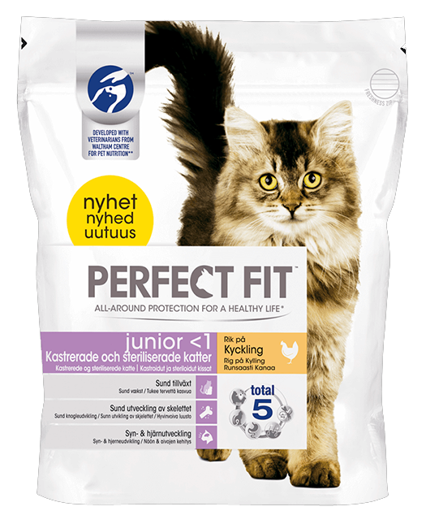

Perfect Fit Junior 1< år med kylling
For at sikre kattekillinger en sund vækst så de får styrket deres udvikling af naturlige instinkter har de brug for et tilpasset foder til killinger med alle vigtige næringsstoffer og vitaminer.
• Velafbalanceret næringsstofindhold
• Fremmer en sund vækst
• Fuldfoder til kattekillinger på op til 12 måneder
• Med værdifulde vitaminer, mineral- og næringsstoffer
Foderet er perfekt sammensat af næringsstoffer og god smag. Perfect Fit indeholder kun nøje udvalgte ingredienser, er uden tilsætning af farvestoffer og konserveringsmidler. Foderet er med sine sunde proteiner, kulhydrater, fedt og vitamin- og mineralstofforhold tæt på killingens naturlige ernæring.
TTørret fjerkræprotein (min. 26% kylling), majsmel, fjerkræfedt, fedtegreveproteiner, sojaprotein, ris (9,5%), majsprotein, hvede, leverhydrolysat, gær, natriumklorid, solsikkeolie (0,5%), kaliumklorid, fiskeolie (0,25% - naturligt indhold af DHA)
Tilsætningsstoffer:
Vitamin A (13.261 IE/kg), vitamin C (105 mg/kg), vitamin D3 (1.463 IE/kg), vitamin E (850 mg/kg), biotin (0,47 mg/kg), kobbersulfat-pentahydrat (28 mg/kg), L-carnithin (220 mg/kg), mangan-(II)-sulfat-monohydrat (150 mg/kg), kaliumjodid (2,3 mg/kg), natriumselenit (0,22 mg/kg), taurin (4.275 mg/kg), zinksulfat-monohydrat (400 mg/kg)
Bestanddele:
• Råprotein 41.0 %
• Råfedt 18.0 %
• Råfibre 1.4 %
• Råaske 8.5 %
• Kalcium 1.1 %
• Fosfor 1.0 %
• Metaboliserbar energi 414 kcal/100 g
Anbefalet foderplan om dagen i killingens alder:
• Op til 3 måneder 50 g
• 4-5 måneder 60 g
• 6-12 måneder 70 g
Sørg for rent drikkevand til rådighed hele døgnet.
Endnu ingen anmeldelser på Perfect Fit Junior under 1 år med kylling/p>